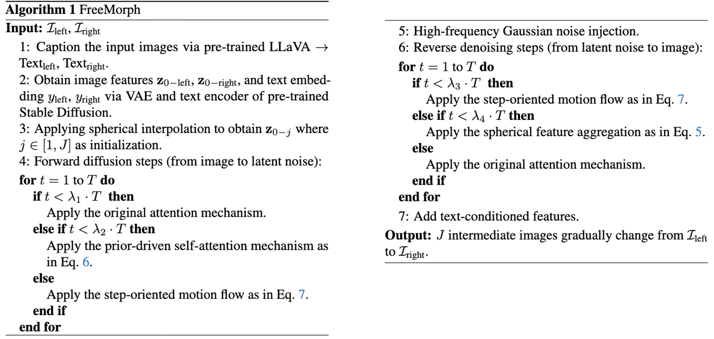

|
Given two input images, FreeMorph effectively generates smooth transitions between them within 30 seconds.
Video
Abstract
We present FreeMorph, the first tuning-free method for image morphing that accommodates inputs with different semantics or layouts. Unlike existing methods that rely on fine-tuning pre-trained diffusion models and are limited by time constraints and semantic/layout discrepancies, FreeMorph delivers high-fidelity image morphing without requiring per-instance training. Despite their efficiency and potential, tuning-free methods face challenges in maintaining high-quality results due to the non-linear nature of the multi-step denoising process and biases inherited from the pre-trained diffusion model. In this paper, we introduce FreeMorph to address these challenges by integrating two key innovations. 1) We first propose a guidance-aware spherical interpolation design that incorporates explicit guidance from the input images by modifying the self-attention modules, thereby addressing identity loss and ensuring directional transitions throughout the generated sequence. 2) We further introduce a step-oriented variation trend that blends self-attention modules derived from each input image to achieve controlled and consistent transitions that respect both inputs. Our extensive evaluations demonstrate that FreeMorph outperforms existing methods, being 10X ~ 50X faster and establishing a new state-of-the-art for image morphing.
Methodology
Given two input images, we first propose two modules: (1) Guidance-aware spherical interpolcation, and (2) Step-oritented variation trend to enhance the directness (capability to preserve the identity) and consistency (smooth transitions). Additionally, we notice that applying either of this two modules across the denoising steps yields suboptimal results. Therefore, we develop a refined approach for the forward diffusion and reverse denoising processes as in the algorithm.
Qualitative Comparisons

BibTeX
@article{
}